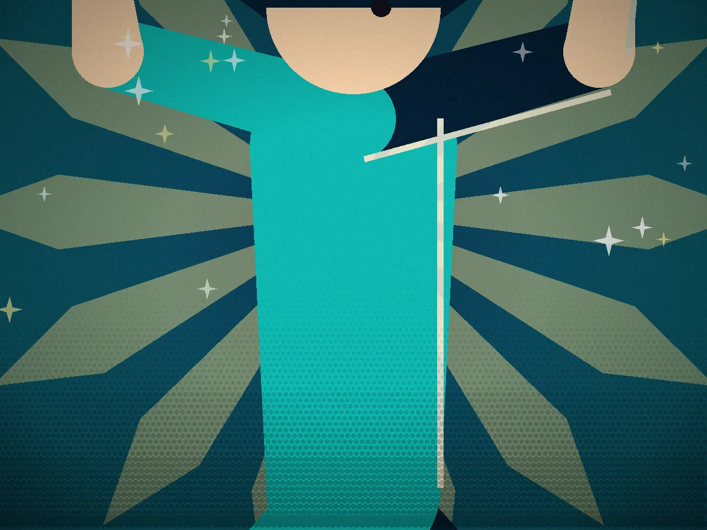
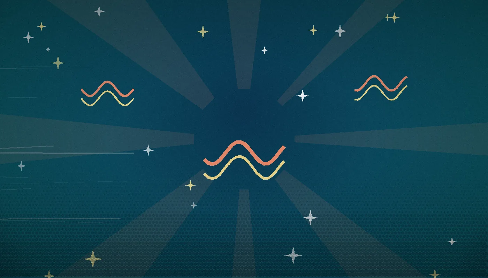
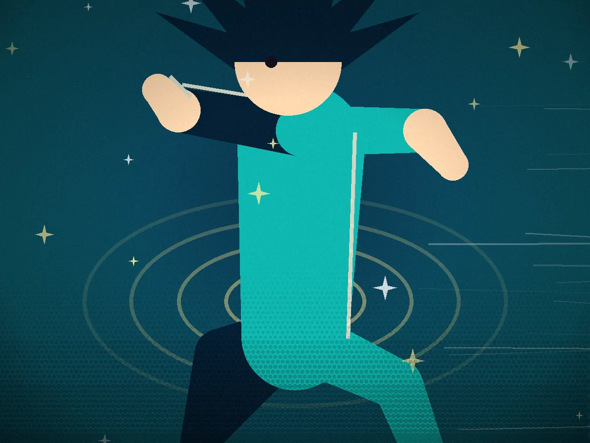

Scene one
The tide comes in with the dark.
Sandals off, yukata sleeves tied back, and the water's already climbing past your ankles. The festival only opens once the sea says so.

Scene two
Feel the pull. Light the paper.
Every wave has a beat. Strike your match on the inhale and the lantern catches first try. Miss it, and the tide snuffs the flame for you.

Scene three
The sky breaks with the surf.
Light enough lanterns and the fireworks sync to the waves themselves — every boom timed to the exact second the tide slaps the shore.